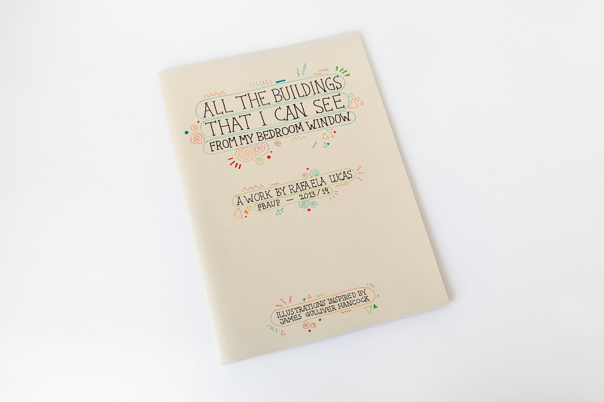
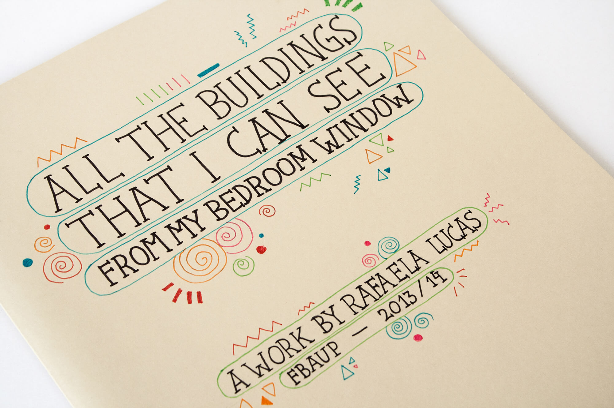
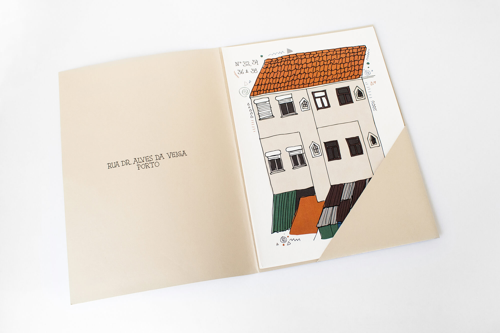
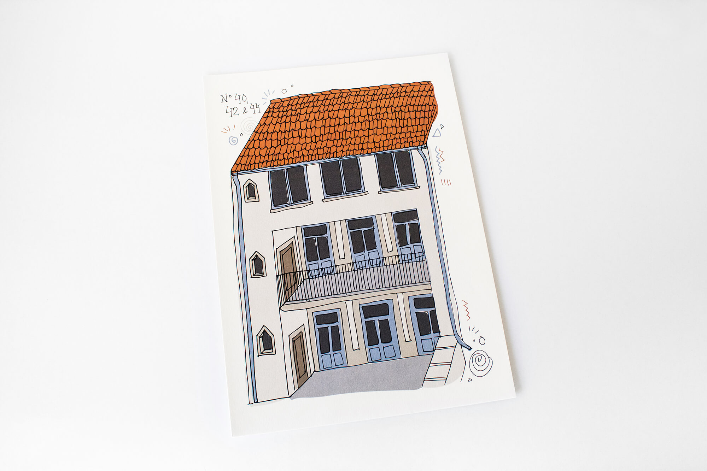
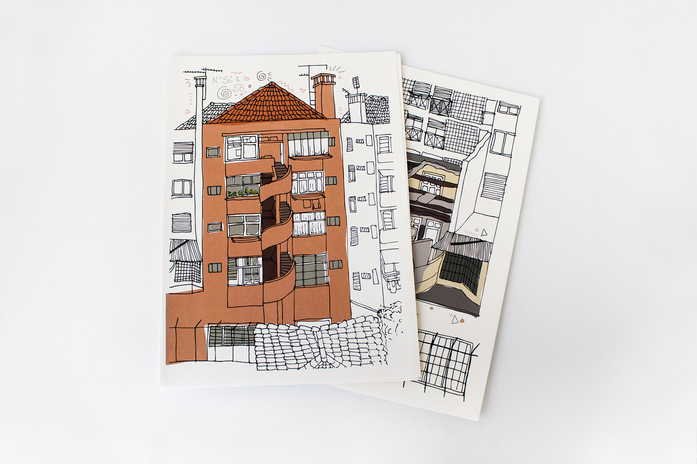

All The Buildings That I Can See From My Bedroom Window
2014 /Illustration /Master’s degree work
Creation of illustrations based on the style of another artist. I chose James Gulliver Hancock and my work was inspired by his project “All The Buildings In New York”. I drew all the buildings that I saw from my bedroom window, in Porto. The drawings were made with black pen on paper, scanned and coloured on Illustrator.







go back
back to top